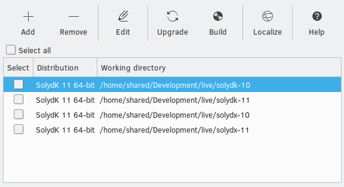
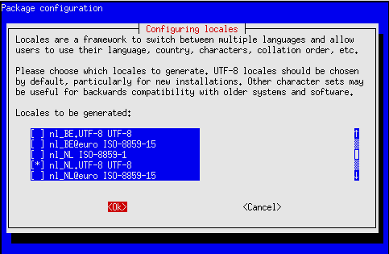
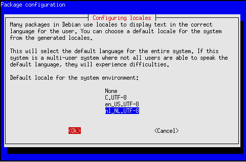
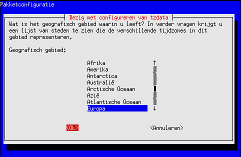
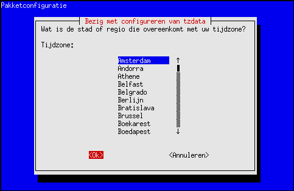

ISO Constructor helps building your custom Debian ISO, and was originally created for maintaining SolydXK ISOs, but it might benefit those who want to build their custom Debian ISO.

Content
- Add distribution
- Remove distributions
- Open directory
- Edit in terminal
- Dist-upgrade distributions
- Build ISOs
- Localize the ISOs
- Use Debian live as base
- Important files
1. Add distribution
Unpack an ISO
Browse for the downloaded ISO, and select a directory to unpack the ISO to.

The button to browse for the unpack directory comes available if the path to the ISO exists.
Add an existing directory
If you previously unpacked an ISO, and removed the distribution from ISO Constructor's list, you can add the existing directory by unchecking the "Create from ISO" checkbox

The Save button comes available if both the path to the ISO, and the unpack directory exist.
2. Remove distributions
This will only remove the selected distributions. The distribution directory, and its contents will NOT be deleted.

3. Open directory
Opens the selected working directory in the default file manager.
4. Edit in terminal
Open a chrooted terminal, and start installing (and removing) all the packages you need. It's easier to change configuration in the distribution's root directory, and not through this terminal.

5. Upgrade distributions
Simply runs "apt-get dist-upgrade" but taking into account that some services need to be handled before and after the upgrade.
6. Build ISOs
This consists of these steps:
- Download offline packages (/lib/live/mount/medium/offline).
- Install all firmware drivers.
- Remove orphaned and unavailable packages (including the old kernel).
- Configure the system.
The building process can take a long time. If you need to quit the process before it ends, you can open a terminal and run:
You need to repeat that if you have more than one distribution selected in the list.
7. Localize the ISOs
This will localize your ISO, setting language and time zone and consists of 6 different steps:
Set the desired locale.
Set the default locale.
Set the time zone.
 - Change the live configuration (/etc/live/config.conf).
- Upgrade (apt-get dist-upgrade).
- When needed, install packages for KDE, Firefox, Thunderbird, LibreOffice and other localization packages. Check the setlocale.sh script for locale specific packages.
Do not forget to translate boot/boot/grub/grub.cfg and boot/isolinux/isolinux.cfg of the ISO.
8. Use Debian live as base
You can even use a Debian Live DVD as a base: http://www.debian.org/CD/live If you use Debian, you'll need the "isolinux" directory (and its contents) to replace the "isolinux" directory in the Debian unpack directory. After that you'll need to configure the distribution from scratch. It's a lot of work, but for a CE (Community Edition) well worth it.
9. Important files
- ~/.constructor/distributions.list: list with distribution directories.
- /usr/share/iso-constructor/grubgen.sh: generates boot/boot/grub/grub.cfg (with grub-template).
- /usr/share/iso-constructor/isolinuxgen.sh: generates boot/isolinux/isolinux.cfg (with isolinux-template).
- /usr/share/iso-constructor/cleanup.sh: this script cleans up prior to building the ISO.
- /usr/share/iso-constructor/setlocale.sh: sets the locale of the ISO. Default is: en_US
- /usr/share/iso-constructor/excludes: list with directories excluded from the ISO build.